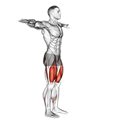
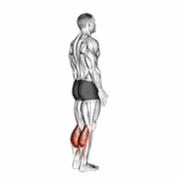
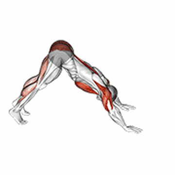
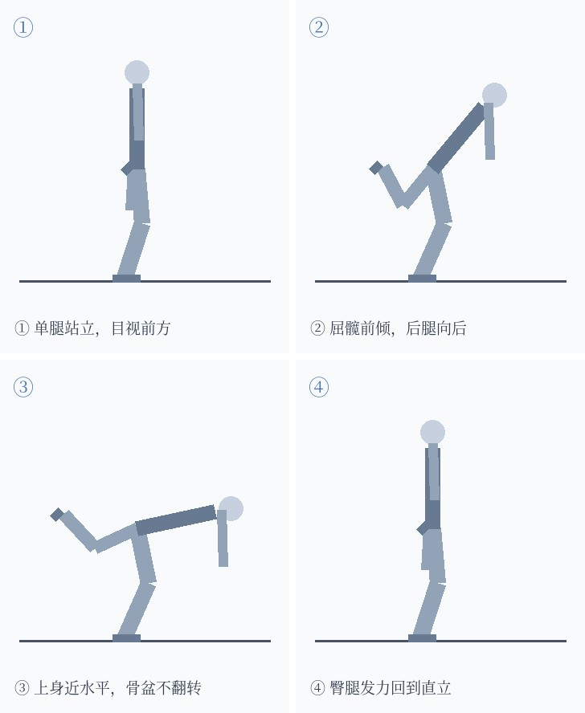
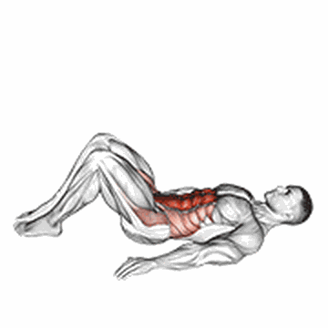
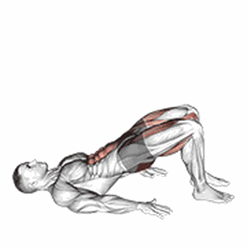

周一 · 下肢力量优先（约 85 min）
热身 4 min → 力量 25 min → 轻松跑 6 km（6'10"–6'30"）。力量必须放在跑步前——跑完 40 分钟再蹲，股四头已疲劳，动作会崩。
周一
下肢 A

分腿蹲（可进阶为保加利亚）
4 组 × 8–12/腿 · 组间 90 秒
两脚前后分开，身体垂直下沉到大腿接近平行，重心压在前腿。想加难度就把后脚搭到长椅或看台台阶上——那就是保加利亚分腿蹲（动图里后脚在地，没有抬起）。

停顿深蹲
3 组 × 12 · 下 3 秒停 2 秒
蹲到大腿平行或更低，底部停 2 秒再起。同样 12 次，慢做的刺激约等于快做的 3 倍。动图是徒手深蹲——它只蹲到约半蹲的深度，你要蹲得比它更深：臀部下压到膝盖高度或略低。

单腿臀桥
3 组 × 12/腿
仰卧屈膝，一条腿伸直抬起，用支撑腿臀部顶髋，顶端停 2 秒。臀部发力，别用腰代偿。

单腿提踵
3 组 × 15/腿
前脚掌站在台阶边缘，脚跟下沉到低于台阶，再发力顶到最高。小腿力量直接关系到落地缓冲。
深蹲跳（与深蹲同一动图）可替代停顿深蹲做爆发版本，每周不超过一次；膝盖不适就换回停顿深蹲。
周二 · 上肢与核心（约 85 min）
力量 30 min → 轻松跑 7 km（6'00"–6'20"）。这天最挤，时间不够就把跑量降到 6 km，不要砍力量。
周二
上肢 + 核心

俯卧撑
4 组 · 接近力竭

派克俯卧撑
3 组 × 10
俯卧超人式
3 组 × 10 · 停 2 秒

死虫式
3 组 × 10/侧

侧平板
2 组 × 30 秒/侧
俯卧撑做不满 8 个就手撑台阶做上斜版；上斜/下斜只是难度调节，不算独立动作。派克俯卧撑是脚在地上、臀抬高的倒 V 形（不是倒立），做不来就先把脚离手近一点、臀抬低一些，或干脆只做俯卧撑。
周三 · 质量跑（约 75 min）
慢跑 2 km 热身 → 4×1000 m @5'00"–5'10"，组间慢跑 400 m → 慢跑 2 km 收尾 + 拉伸。
— 周三不安排力量训练，给周一、周二的腿留恢复 —
周四 · 下肢力量（约 85 min）
力量 25 min → 轻松跑 6 km（6'10"–6'30"）。定位是「次重、不追求力竭」，让周一之后的腿有恢复空间。
周四
下肢 B（次重）

单腿硬拉（徒手）
3 组 × 10/腿 · 慢放 4 秒
一条腿支撑，另一条腿向后伸，上身前倾到接近水平，再靠臀和腘绳把身体拉回直立。练臀、腘绳与髋稳定，是跑者最该练的链条。替代俯卧挺身——后者需要固定脚踝，空地做不了。图为四步分解（自制）：① 单腿站立 ② 屈髋前倾、后腿跟着向后 ③ 上身接近水平、两侧骨盆保持水平不翻转 ④ 臀腿发力回到直立。全程支撑腿微屈、背不弓。

单腿箱式蹲
3 组 × 8/腿
坐在长凳或看台台阶上，用一条腿站起来，全程控制、慢慢坐回。单侧承重是没负重时最好的强度来源；太难就先双手扶固定物、或降低凳高。

臀桥
3 组 × 15 · 顶端停 1 秒
仰卧屈膝双脚踩地，臀部发力顶髋，顶端夹紧停 1 秒。与单腿臀桥同属髋伸链，区别是双侧更偏耐力与激活。

臀桥行军步
3 组 × 10/腿
臀桥顶到最高位保持不动，交替把一条腿抬起（膝盖角度不变），骨盆不许左右晃。练的是单侧髋伸 + 抗旋转，比静态臀桥更接近跑步时的单腿支撑。
髋主导（单腿硬拉）+ 膝主导单侧（单腿箱式蹲）+ 髋伸（臀桥）+ 单侧髋伸与抗旋转（臀桥行军步），四个动作覆盖四种模式。
周五 · 长一点轻松跑（约 90 min）
10–11 km @6'00"–6'20"，全程能说话。周一至周四压掉的里程在这里补回来。
— 周五不安排力量训练 —
周六 / 周日 · 完全休息
不训练。睡眠 7–8 小时，蛋白质 90–100 g/天——肌肉量的另一半在这两天解决。
强度判断：每组做完还能再做 2–3 次 = 合适；能轻松再做 10 次 = 太轻，先检查蹲得够不够深、放得够不够慢；做完直接趴下或动作变形 = 减次数。
进阶顺序：加幅度 → 加节奏（下放 4 秒、底停 2 秒）→ 单侧 → 4–6 周后才考虑负重。
共 14 个动作：覆盖髋膝主导（双侧/单侧）、髋伸、踝伸、水平推、垂直推、水平拉、抗伸展、抗侧屈、抗旋转。每个动作负责不同模式，彼此不重复。
动图来源：开源健身动作库 exercises-dataset-zh（Gym visual 授权）。部分动图为同模式动作示意，已在说明中标注。